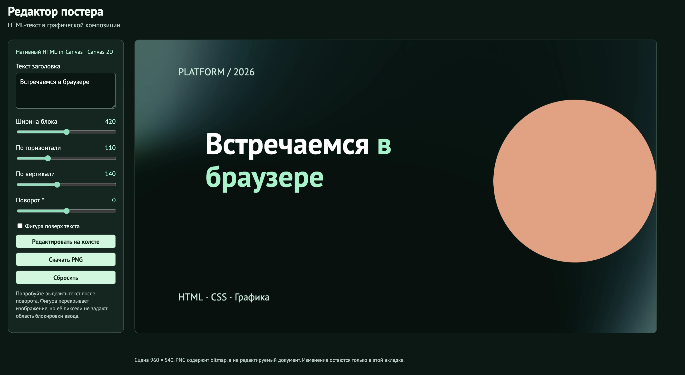
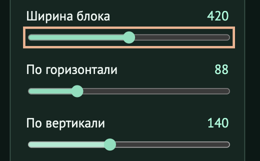
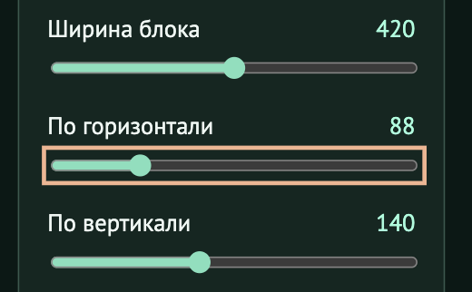
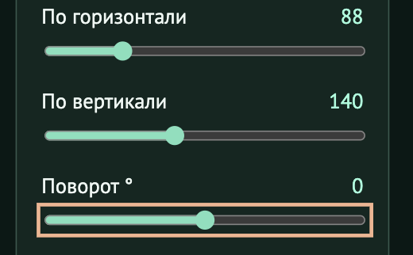
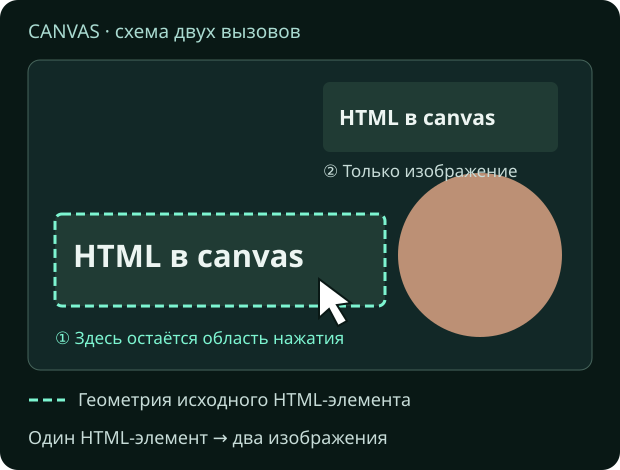
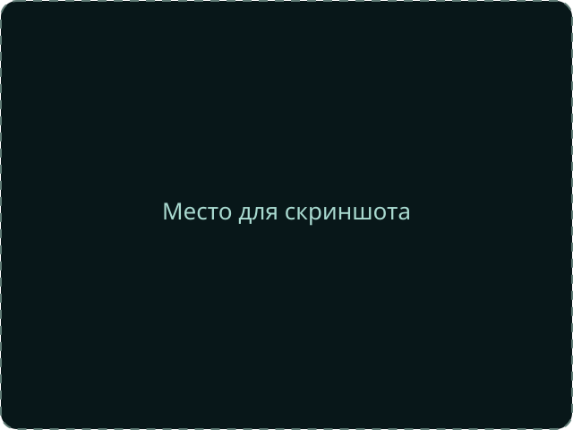

HTML-in-Canvas: границы возможного
Анна Расторгуева
HTML × графика
HTML-in-Canvas:
Собираем редактор постера
Анна Расторгуева
PLATFORM / 2026 HTMLCANVAS Текст
остаётся HTML.
Знакомство
Обо мне
Fullstack из Сбера
В профессии 7 лет
Люблю котиков
01 / Задача
Один постер. Две модели
01
DOM
Содержимое, CSS-вёрстка, ввод
02
Canvas
Координаты, слои, пиксели
03
Редактор
Пользователь ожидает всё сразу
Нужно ли нам создавать собственный текстовый движок?
01 / Задача
План доклада
01
Зачем нужен API
Редактор, альтернативы, цена текста
02
Как он работает
DOM → paint
03
Где его границы
Экспорт, 3D, стоимость, внедрение
01 / Задача
Figma: проблема уже существует
Графический холст использует собственный рендерер
Отрисовка сцены через WebGL / WebGPU
Браузер не получает семантику из нарисованных пикселей
Доступность приходится проектировать отдельно
Наш прототип исследует ту же категорию задач
01 / Задача
Техническое задание на демо
Фон и фигуры
Текст с оформлением и переносами
Ширина, позиция и поворот
Редактирование и экспорт PNG
Без таймлайна, сервера и совместной работы
PLATFORM / 2026 HTMLCANVAS Текст
остаётся HTML.
01 / Задача
Вот что будем собирать

Слева — инструменты, справа — постер. На снимке — DOM-просмотр.
Вот как будет выглядеть наш редактор. Слева — поле с текстом и настройки: ширина блока, положение и угол поворота. Справа — сам постер: фон, круг и заголовок. Именно эту композицию мы будем постепенно собирать по ходу доклада.
Панель управления останется обычным HTML. А содержимое постера будем рисовать в canvas. Начнём с самого простого варианта: попробуем написать текст обычной командой рисования.
01 / Задача
Попробуем обычный Canvas 2D
JavaScript const canvas = document.getElementById('poster');
const ctx = canvas.getContext('2d');
ctx.font = 'bold 48px sans-serif';
ctx.fillStyle = '#7df5d1';
ctx.fillText('Встречаемся в браузере', 80, 140);HTML <canvas id="poster" width="960" height="540"></canvas>
Один вызов рисует строку. Интерфейс требует большего.
Посмотрите на правую колонку. Тег canvas создаёт область для рисования. Его id — имя, по которому мы находим этот элемент в JavaScript слева.
Вызов getContext с аргументом «2d» возвращает объект с командами для двухмерного рисования. Это контекст canvas. В коде мы сохраняем его в переменную ctx: через неё выбираем шрифт и цвет, рисуем текст и фигуры.
Ниже метод fillText выводит строку. Числа восемьдесят и сто сорок задают её положение на холсте. Для простой подписи этого достаточно.
Но у нас абзац с разным оформлением слов. При изменении ширины он должен переноситься, а пользователь хочет выделять и заменять текст. Один вызов fillText эти возможности не добавляет. Их пришлось бы реализовать отдельно. Попробуем другой подход.
01 / Задача
Второй путь: HTML поверх холста
<div class="workspace">
<canvas id="poster"></canvas>
<div class="text-layer" contenteditable="true">
Встречаемся <strong>в браузере</strong>
</div>
</div>Рабочее решение, пока композиция допускает отдельный DOM-слой
01 / Задача
Где возникает цена интеграции
01
Порядок
Текст должен быть между фигурами
02
Геометрия
Масштаб и поворот должны совпадать
03
Экспорт
PNG должен включать весь постер
canvas.toBlob() не захватывает соседний DOM
01 / Задача
Что меняет HTML-in-Canvas
HTML становится источником для рисования
const title = document.getElementById('title');
ctx.drawElementImage(title, 80, 120);
Текст описан DOM. Его внешний вид участвует в сцене
02 / Новое API
Зафиксируем версию API
// Актуальная модель в explainer:
<canvas content="drawable">
<article drawable>...</article>
</canvas>
// В старых статьях встречается layoutsubtreeПримеры разных поколений нельзя механически смешивать
02 / Новое API
Проверяем нужные возможности
const native =
'drawElementImage' in CanvasRenderingContext2D.prototype &&
'requestPaint' in HTMLCanvasElement.prototype &&
'updateElementGeometry' in HTMLCanvasElement.prototype;
if (!native) showFallback();Наличие методов — первый фильтр. Затем проверяем реальную отрисовку
02 / Новое API
Подготавливаем HTML
<canvas id="poster" content="drawable">
<article id="title" drawable
contenteditable="true"
role="textbox" aria-multiline="true"
aria-label="Заголовок постера">
Встречаемся <strong>в браузере</strong>
</article>
</canvas>Один drawable — одна управляемая часть композиции
02 / Новое API
Вёрстку оставляем CSS
#title {
box-sizing: border-box;
width: 420px;
padding: 20px;
font: 700 44px/1.1 sans-serif;
color: white;
overflow-wrap: anywhere;
}
#title strong { color: #7df5d1; }02 / Новое API
Размер CSS ≠ размер bitmap
const W = 960, H = 540;
const dpr = window.devicePixelRatio || 1;
canvas.width = Math.round(W * dpr);
canvas.height = Math.round(H * dpr);
// В CSS: canvas { width: 960px; height: 540px; }
// Рисуем в логических координатах W × HПлотность пикселей влияет и на чёткость, и на память
02 / Новое API
Первый кадр: ждём paint
const ctx = canvas.getContext('2d');
const title = document.getElementById('title');
canvas.addEventListener('paint', () => {
ctx.reset();
ctx.scale(dpr, dpr);
ctx.fillStyle = '#102b26';
ctx.fillRect(0, 0, W, H);
ctx.drawElementImage(title, 80, 120, boxW, boxH);
});
canvas.requestPaint()boxW / boxH — размеры HTML-блока из ResizeObserver
03 / Как браузер рисует
Путь одного изменения
DOM + CSS → Layout → Снимок
команд → paint → Canvas
Браузер готовит изображение HTML-элемента.
03 / Как браузер рисует
DOM меняется до отрисовки
widthControl.addEventListener('input', () => {
title.style.width = `${widthControl.value}px`;
});
new ResizeObserver(([entry]) => {
const box = entry.borderBoxSize[0];
boxW = box.inlineSize;
boxH = box.blockSize;
canvas.requestPaint();
}).observe(title);

Изменение ширины блока
ResizeObserver сохраняет геометрию, paint использует её
03 / Как браузер рисует
Ошибка: менять DOM внутри paint
canvas.addEventListener('paint', () => {
title.textContent = 'Новый текст';
ctx.drawElementImage(title, 0, 0, boxW, boxH);
// Этот вызов ещё использует подготовленный снимок
});Изменение DOM попадёт в следующее обновление рендеринга
03 / Как браузер рисует
Позиция меняется без нового текста
// Наш объект: координаты блока и угол в градусах
const scene = { x: 110, y: 140, angle: 0 };
xControl.addEventListener('input', () => {
scene.x = Number(xControl.value);
canvas.requestPaint();
});

Перемещение блока
scene хранит положение и поворот блока. Это наш объект, не API браузера
03 / Как браузер рисует
Поворот задаём контексту
ctx.save();
ctx.translate(scene.x, scene.y);
ctx.rotate(scene.angle * Math.PI / 180);
ctx.drawElementImage(title, 0, 0, boxW, boxH);
ctx.restore();

Поворот блока
Начало координат блока теперь находится в scene.x / scene.y.
03 / Как браузер рисует
Демо 1 · Собираем постер
04 / Взаимодействие и границы
Как взаимодействовать с текстом на canvas
01
Рисование
Что видит пользователь
02
Геометрия
Куда попадают указатель и фокус
03
Семантика
Что понимают браузер и ассистивные технологии
04 / Взаимодействие и границы
В 2D геометрия следует рисованию
ctx.drawElementImage(title, x, y, boxW, boxH);
// ① Обновляем изображение и геометрию
// ② Копия без изменения геометрии:
ctx.drawElementImage(title, 600, 40, 200, 100, {
preserveElementGeometry: true
});

Пунктир — область нажатия, а не рамка текста
Две картинки одного DOM-узла не создают два независимых редактора.
04 / Взаимодействие и границы
Редактируем текст прямо на canvas
04 / Взаимодействие и границы
HTML-элемент сохраняет свои события
const title = document.getElementById('title');
const textarea = document.getElementById('copy');
title.addEventListener('input', () => {
textarea.value = title.textContent;
});Редактируем article на постере → обновляем textarea слева
04 / Взаимодействие и границы
Перекрытие: проверяем два результата
ctx.drawElementImage(title, x, y, boxW, boxH);
ctx.fillStyle = '#fa977b';
ctx.fillRect(360, 190, 240, 90);
// Фигура закрыла пиксели текста
// Но создала ли она область, блокирующую ввод?Порядок пикселей и порядок hit testing — не одно и то же
04 / Взаимодействие и границы
Проверяем клик под перекрытием
[Для записи: включить перекрывающую фигуру, нажать по закрытому тексту, ввести символ и выключить фигуру, чтобы показать результат. Сейчас на слайде временно стоит demo-2.mp4. Вывод о прохождении клика произносить только если новая запись его подтверждает.]
Включаю прямоугольник — он закрывает часть надписи. Теперь нажимаю там, где под ним находятся буквы, и пробую ввести символ.
Чтобы увидеть результат, убираю прямоугольник. Если символ появился в этом месте, значит, нажатие попало в текст, хотя буквы были закрыты фигурой.
Именно это мы и проверяем: закрыть текст картинкой и запретить взаимодействие с ним — разные задачи. Если хотим ограничить область, в которой текст принимает нажатия, её нужно задать отдельно. Об этом следующий слайд.
04 / Взаимодействие и границы
Обрезка ввода задаётся отдельно
canvas.updateElementGeometry(title, {
canvasClip: { x: 0, y: 0, width: 200, height: 100 },
preserveHitTestOrder: true
});
// Координаты clip — в локальной системе элемента.
// Это не универсальная маска по пикселям сцены.Прямоугольный clip не описывает отверстие произвольной формы.
Можно ли явно ограничить область, в которой элемент принимает клики? Для этого на слайде вызываем updateElementGeometry — команду обновления данных для взаимодействия.
В canvasClip задаём разрешённый прямоугольник. Ноль, ноль — верхний левый угол самого блока до перемещения и поворота. От него отсчитываем ширину двести и высоту сто. Это и называют локальными координатами элемента.
PreserveHitTestOrder сохраняет прежний порядок проверки элементов при клике: этим вызовом мы меняем область, но не поднимаем элемент выше остальных.
При этом canvasClip не стирает изображение за границами прямоугольника. Видимую обрезку и область взаимодействия нужно согласовать отдельно. И такой прямоугольник не описывает отверстие в середине текста или волнистое искажение. Поэтому перекрывающую фигуру из предыдущего примера он автоматически не исправляет.
04 / Взаимодействие и границы
Демо 2 · Ломаем ожидания
Редактируем повёрнутый текст.
Добавляем перекрывающую фигуру.
Проверяем клик, выделение и Tab.
Сравниваем видимую область и область ввода.
Проверить границы в редакторе ↗
Вернёмся к постеру и проверим то, что обычно не видно на красивой демонстрационной картинке.
*[Выставить небольшой угол, примерно двенадцать градусов. Нажать «Редактировать на холсте».]*
Сначала попробуем обычный ввод. Важно проверить, где появляется курсор и совпадает ли он с тем текстом, который мы видим. Затем попробуем выделить несколько слов. Для пользователя это одно привычное действие, а для нашего приложения здесь уже должны согласоваться положение блока, его поворот и поведение браузера.
*[Попробовать ввод и выделение. Затем включить фигуру поверх текста.]*
Теперь часть текста закрыта. Проверим, что произойдёт с кликом по этой области. Сам результат здесь полезнее любого обещания: мы выясняем, какие правила уже обеспечивает браузер, а какие нужно добавить в редактор.
*[Выбрать реплику по реальному результату проверки.]*
Если клик попал в закрытый текст: «Вот эта граница и проявилась: картинка изменилась, но фигура сама по себе не стала преградой для ввода».
Если клик не попал в текст: «В этой сборке данный сценарий отработал так. Но это ещё не проверка всех перекрытий: другие формы и режимы редактирования нужно исследовать отдельно».
Главное — проверять интерфейс действиями, а не только смотреть на готовую картинку.
04 / Взаимодействие и границы
HTML в canvas не отменяет безопасность
Это не API для захвата любой вкладки.
Ресурсы и чувствительное содержимое имеют ограничения.
Для экспорта нужна origin-clean композиция.
const image = new Image();
image.crossOrigin = 'anonymous'; // до src
image.src = 'https://cdn.example.org/poster.jpg';
// Сервер тоже должен разрешить CORS.Клики — одна граница, а доступ к изображениям — другая. Допустим, мы добавили в постер фотографию с чужого сайта обычной командой drawImage.
Браузер может разрешить показать такую картинку, но запретить прочитать пиксели canvas или сохранить их в файл. Такой холст называют tainted — недоступным для чтения из-за происхождения содержимого.
В примере crossOrigin запрашивает загрузку с разрешением на использование данных. Сервер изображения тоже должен выдать это разрешение. Этот механизм называется CORS; одна настройка в нашем коде не заменяет ответ сервера.
Это правило обычного рисования изображений. У HTML-in-Canvas есть ещё свои ограничения: защищённое содержимое может вообще не попасть в снимок HTML-блока.
Наш фон лежит в проекте. Но демо всё равно открываем через HTTP или HTTPS: например, localhost или GitHub Pages. Открытие с диска через file может привести к запрету экспорта.
05 / Экспорт и другие контексты
Сохраняем следующий готовый кадр
let exportPending = false;
exportButton.addEventListener('click', () => {
exportPending = true;
canvas.requestPaint();
});
// В конце обработчика paint, после drawScene():
if (exportPending) {
exportPending = false;
canvas.toBlob(saveBlob, 'image/png');
}Не экспортируем старый bitmap сразу после изменения DOM.
Теперь самая практичная часть — экспорт. Пользователь исправил слово и сразу нажал «Скачать». Мы хотим сохранить уже новый текст.
Если просто вызвать toBlob сразу после изменения DOM, можно прочитать старое изображение canvas. Ведь новое содержимое ещё нужно подготовить и нарисовать.
Поэтому обработчик кнопки записывает true в exportPending. Это флаг — переменная с двумя значениями: true означает «нужно сохранить», false — «запроса нет». Затем запрашиваем paint. Сам экспорт выполняется в конце рисования, когда постер уже собран.
Проверяем флаг, сбрасываем его и вызываем toBlob. Полученный файл передадим в saveBlob — эту небольшую функцию покажу следующим слайдом.
Отдельно до этого должны загрузиться шрифты и фоновые изображения. Ожидание paint не заменяет всю подготовку приложения. Но оно помогает привязать сохранение к нужной стадии: сначала нарисовали актуальный постер, затем забрали его изображение.
05 / Экспорт и другие контексты
От Blob до скачанного PNG
function saveBlob(blob) {
if (!blob) return showExportError();
const url = URL.createObjectURL(blob);
const link = document.createElement('a');
link.href = url;
link.download = 'poster.png';
link.click();
setTimeout(() => URL.revokeObjectURL(url), 1000);
}Экспорт — растр. DOM и редактируемость в PNG не сохраняются.
Функция скачивания уже не связана с новым API. Мы получили Blob, создаём для него временный адрес, делаем ссылку с именем файла и запускаем скачивание. После этого освобождаем временный адрес.
Есть одна вещь, о которой легко забыть: PNG — это готовое изображение. Внутри не сохранятся наш article, выделенные слова или ползунки. Открыть PNG и продолжить редактирование как документа не получится.
Для сохранения проекта нужен отдельный формат: текст, оформление, координаты и остальные параметры сцены. А PNG нужен, чтобы поделиться результатом или использовать его где-то ещё.
То есть экспорт картинки у нас теперь общий, но модель самого редактора по-прежнему остаётся нашей задачей.
05 / Экспорт и другие контексты
Демо 3 · Что получилось в файле
Меняем текст → сохраняем PNG → открываем результат.
Проверяем переносы, порядок слоёв и поворот.
Открыть демо для экспорта ↗
Теперь проверим, получилось ли то, ради чего мы вообще объединили HTML и canvas.
*[Изменить надпись, оставить небольшой поворот. При желании включить перекрывающую фигуру.]*
На экране сейчас конкретный постер: с этим текстом, этими переносами и таким порядком элементов. Нажимаю «Скачать PNG».
*[Скачать файл и открыть его рядом с демо.]*
Сравним несколько вещей. Есть ли в файле сам текст? Сохранились ли переносы? Остался ли поворот? Там ли находится фигура, которая перекрывает надпись?
Если всё совпало: «Вот теперь требование выполнено: текст попал в общую картинку вместе с остальной сценой».
Если есть расхождение: «Здесь видно расхождение. Значит, эту комбинацию настроек и поведения браузера нужно проверить до использования в продукте».
Мы экспортируем результат рисования, а не снимаем экран целиком. Панель управления слева и остальные элементы страницы в этот файл не входят.
05 / Экспорт и другие контексты
Та же идея — для WebGL и WebGPU
HTML → Изображение элемента → GPU-текстура → Сцена
// Имена в актуальном explainer:
// WebGL: texElementSubImage2D(...)
// WebGPU: drawElementImageToTexture(...)
// Геометрия: canvas.updateElementGeometry(...)Схема API, не готовая настройка графического конвейера.
В двумерном примере мы рисовали HTML-блок прямо на холсте. В WebGL и WebGPU его изображение можно использовать как текстуру — картинку для поверхности графического объекта. Например, экран терминала внутри трёхмерной комнаты.
На слайде показаны названия команд для этих двух API. В обоих случаях браузер подготавливает HTML, а графический код использует его изображение.
Есть отличие во взаимодействии. Браузер не знает из одной текстуры, где экран терминала окажется после поворота объекта или движения камеры. Приложение рассчитывает это положение и передаёт его через updateElementGeometry.
Камера здесь — точка, из которой мы смотрим на трёхмерный мир. А шейдер — программа, которая может менять вид поверхности, например изгибать её изображение волной. Такой эффект сам по себе не объясняет браузеру новую форму области для кликов. Это уже требует отдельного решения.
05 / Экспорт и другие контексты
Где 3D действительно помогает
Терминал в игре: текст, кнопки и события внутри сцены.
Quest Signal связывает HTML-панели и Godot.
Копирование кода меняет игровое задание.
HTML-кнопка создаёт объекты в мире.
Работающий прототип ≠ доказательство готовности продукта.
Такой сценарий уже можно посмотреть в работающем прототипе Quest Signal. Авторы связали HTML-панели со сценой на Godot — игровом движке, который управляет трёхмерным миром и объектами в нём.
Пользователь может скопировать код с панели, и это меняет состояние задания. Может нажать HTML-кнопку, после чего в сцене появляются объекты. А результат из игры возвращается обратно в интерфейс.
Мне этот пример нравится тем, что текст участвует в действии, а не просто украшает трёхмерную поверхность. Есть обмен в обе стороны: браузерный интерфейс влияет на сцену, сцена обновляет интерфейс.
Но это именно прототип. Его существование не означает, что все вопросы совместимости и доступности уже решены. Ссылка оставлена на слайде, если захочется разобрать пример и исходники подробнее.
06 / Производительность
За кадр платим несколько раз
01
DOM
Style, layout и подготовка содержимого.
02
Графика
Растеризация, текстуры и сборка сцены.
03
Интерфейс
JS, геометрия и обработка ввода.
«Попало на GPU» не означает «стало бесплатно».
С возможностями разобрались. Теперь посмотрим, за какую работу мы платим временем и ресурсами устройства.
Первая карточка — HTML: определить стили, рассчитать строки и подготовить команды рисования. Вторая — графика: превратить команды в пиксели и собрать из частей итоговую картинку. Превращение в пиксели называется растеризацией. Третья — наш код: обработать ввод, обновить параметры и согласовать положение элементов.
Разные изменения дают разную нагрузку. При движении блока его строки могут остаться прежними. При изменении ширины браузеру нужно заново расположить текст. А сложный графический эффект добавляет свои вычисления.
Поэтому сам факт использования GPU не обещает ускорения всего интерфейса. Для нашего примера очевидная польза — возможность взять готовую браузерную вёрстку. Скорость нужно измерять отдельно.
06 / Производительность
Площадь × плотность × частота
const bytes = width * height * dpr ** 2 * 4;
// 1920 × 1080, DPR 2, RGBA8:
// ≈ 31.6 MiB на одну несжатую поверхность
// Это нижняя модель одной поверхности,
// не вся память приложения и GPU.DPR 2 даёт в четыре раза больше пикселей, чем DPR 1.
Возьмём конкретное разрешение на слайде: тысяча девятьсот двадцать на тысячу восемьдесят. При dpr два увеличиваем вдвое и ширину, и высоту изображения. Всего пикселей становится в четыре раза больше.
В этой оценке каждый пиксель занимает четыре байта: по одному на красный, зелёный, синий и прозрачность. Это формат RGBA8. Получаем примерно тридцать два мебибайта для одного несжатого изображения в памяти.
Поверхностью здесь называют память с пикселями, а не отдельный элемент страницы. Браузер может хранить несколько таких изображений и промежуточные результаты, поэтому это не оценка всей памяти приложения. И не размер PNG после сжатия.
Вывод практический: увеличение разрешения стоит ресурсов. А если большое изображение ещё и часто перерисовывается, увеличивается объём работы за секунду.
06 / Производительность
Не запускаем лишний цикл
// Для статичного постера:
controls.addEventListener('input', () => {
updateSceneState();
canvas.requestPaint();
});
// Плохая идея без анимации:
// onpaint = () => { draw(); canvas.requestPaint(); };

Панель управления
Перерисовка по изменениям — исходная стратегия демо.
Первое, что можно сделать в нашем случае, — не рисовать без необходимости. Постер стоит на месте, пользователь ничего не меняет. Зачем нам собирать одну и ту же картинку шестьдесят раз в секунду?
Здесь обработчик инструментов обновляет состояние и запрашивает новый paint. Одно действие — повод для обновления. В покое постоянный цикл нам не нужен.
Если мы делаем анимацию, ситуация другая. Там последовательность кадров — часть задачи, и цикл оправдан. Но в статичном редакторе его легко добавить по привычке и потом тратить ресурсы без видимой пользы.
Когда блоков станет много, появятся и другие вопросы: какие из них видны, какие изменились, какие можно пока не обновлять. HTML-in-Canvas предоставляет возможность рисования, но всю стратегию обновления сцены приложение выбирает само.
06 / Производительность
Измеряем, а не угадываем
const start = performance.now();
drawScene();
const jsDuration = performance.now() - start;
// Это время JS-вызовов, не завершённый GPU-кадр.
// Performance trace: layout, paint, кадры, ввод.Сравнить 1 / 20 / 100 блоков; DPR 1 / 2; движение / перевёрстку.
Как проверить, где именно приложение тормозит? В коде на слайде drawScene — название нашей функции, которая рисует постер. Это не метод браузера. Замеряем время до её вызова и после.
Полученное число показывает, сколько заняли JavaScript-вызовы. Но графический процессор может ещё выполнять переданные ему команды. Поэтому быстро завершившаяся функция не доказывает, что весь кадр уже готов.
Для подробностей открываем Performance в инструментах разработчика и записываем работу страницы. Это запись по времени: когда выполнялся код, когда браузер рассчитывал вёрстку и обновлял изображение. Смотрим также, не запаздывает ли ввод.
Сравнивать будем одинаковые действия: движение и изменение ширины, один блок и много блоков, dpr один и два. На одном устройстве, после загрузки ресурсов и с несколькими повторами. На слайде план проверки, а не результаты готового бенчмарка.
06 / Производительность
Worker переносит не весь браузер
// Main thread, внутри paint:
const snapshot = canvas.captureElementImage(title);
worker.postMessage({ snapshot }, [snapshot]);
// Worker, после получения OffscreenCanvas:
self.onmessage = ({ data }) => {
ctx.drawElementImage(data.snapshot, 0, 0);
};Фрагмент передачи снимка. DOM и layout остаются на main thread.
Ещё один возможный шаг — вынести часть графической работы в worker. Но важно понимать, какую именно часть.
Живой DOM-элемент нельзя просто отправить в другой поток и продолжить там обычную работу со страницей. У worker нет такого же доступа к DOM.
В этой модели сначала на основном потоке получаем подготовленный снимок элемента через captureElementImage. Затем передаём этот снимок в worker. Там его можно использовать для рисования в OffscreenCanvas.
На слайде только сама передача. Создание worker и настройка его холста оставлены за кадром.
Вёрстка HTML при этом не переехала в worker. Её по-прежнему делает браузер на основной стороне. А ещё нужно следить, чтобы новые снимки не накапливались быстрее, чем их успевают рисовать. Поэтому worker — полезный инструмент, но не кнопка «сделать всё быстро».
07 / Внедрение
Что проверяем перед релизом
Реальный ввод: IME, выделение, вставка, undo.
Клавиатура и экранный диктор.
Масштаб, DPR, шрифты, изменение размеров.
Перекрытия, несколько копий, экспорт.
Поддержка API и понятный запасной режим.
Допустим, картинка нас устраивает и по скорости всё хорошо. Что проверять перед тем, как показывать такой редактор пользователям?
В первую очередь обычные действия с текстом. Ввод, выделение, вставку, отмену. Например, IME из списка на слайде — способ ввода, при котором человек сначала набирает сочетание символов, а затем выбирает иероглиф. Такой ввод тоже должен работать без потери текста.
Потом клавиатуру и доступность. Можно ли добраться до нужного элемента? Понятно ли, что сейчас редактируется? Не конфликтуют ли команды редактора с вводом текста?
Дальше размеры, масштаб, шрифты, перекрытия и экспорт. Всё то, что мы попробовали на одном блоке, придётся проверить для реальных сценариев приложения.
Наше демо намеренно маленькое. Оно показывает устройство подхода, но успешное прохождение нескольких действий ещё не означает, что у нас получился готовый редактор документов.
07 / Внедрение
Fallback — отдельный продуктовый выбор
if (supportsNativePath) {
startCanvasEditor();
} else {
showDOMPreview();
exportButton.disabled = true;
showMessage('Доступен просмотр и правка текста');
}Не называем DOM-просмотр эквивалентом всей графической сцены.
Нужно заранее решить и то, что будет в браузере без подходящей реализации API. В нашем примере ответ простой: показываем текст обычным HTML и позволяем его менять. Но выключаем экспорт и инструменты, которые зависят от общей canvas-сцены.
Это ограниченный режим, и интерфейс прямо об этом сообщает.
Для настоящего продукта решение может быть другим. Например, отдельный серверный экспорт или другой способ отображения. Важно выбрать его под задачу, а не только написать условие if — проверку, какая ветка кода должна выполняться.
Сам факт наличия запасной ветки не делает все функции одинаково доступными во всех браузерах. Нужно проверить, какую задачу пользователь сможет выполнить в каждом режиме. Тогда отсутствие нового API будет понятным ограничением, а не неожиданной поломкой посреди работы.
07 / Внедрение
Когда API оправдан
01
Да
HTML должен стать частью графики и экспорта.
02
Возможно
Много сложного контента внутри canvas-сцены.
03
Обычно нет
Обычная форма или панель поверх приложения.
Так когда стоит брать HTML-in-Canvas?
Для нашего постера есть конкретный аргумент: сложный HTML-текст должен стать частью общей графической композиции и попасть в экспорт. Здесь браузерная вёрстка действительно снимает часть работы.
Похожие задачи могут появиться в редакторах, визуализациях и трёхмерных сценах. Но сам по себе факт, что на странице есть canvas, ещё не повод переносить в него весь интерфейс.
Если нужна обычная форма, меню или панель настроек рядом с холстом, обычный HTML часто будет проще. Не нужно усложнять такую задачу только ради нового API.
Я бы начинала с требования: что именно мы не можем удобно сделать существующим способом? И уже после этого оценивала бы, насколько новая возможность оправдывает поддержку и дополнительные проверки.
07 / Внедрение
Границы возможного
Браузеру — вёрстка.
HTML-in-Canvas сокращает работу,
Вернёмся к вопросу в начале. Нужно ли нам писать собственный текстовый движок, чтобы добавить оформленный текст в маленький canvas-редактор?
Для нашего сценария HTML-in-Canvas позволяет отдать вёрстку браузеру. Мы описываем содержимое и стили, а в canvas решаем, как собрать итоговую картинку.
Но между ними остаётся работа приложения. Нужно согласовать ввод и положение текста, продумать перекрытия, дождаться правильного кадра для экспорта и проверить стоимость обновлений.
Вот для меня и проходят границы возможного: API убирает часть сложной работы, но не превращается в готовую Figma. Чем точнее мы понимаем свою задачу и эти границы, тем легче решить, стоит ли его использовать.
07 / Внедрение
Код, источники, вопросы
Какое поведение вы проверили бы первым?
На последнем слайде оставила ссылки на наш редактор, код и источники. Можно открыть пример и попробовать те же действия самостоятельно: изменить ширину текста, повернуть блок, добавить перекрытие и проверить сохранённую картинку.
Спасибо! Буду рада вопросам. И мне интересно, какое поведение вы проверили бы первым, если бы добавляли такой текст в свой редактор.